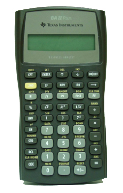
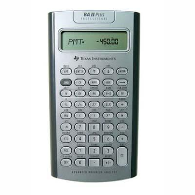

WebCal 計數機網頁
TEXAS INSTRUMENTS BA II PLUS
及 BA II PLUS PROFESSIONAL 簡介
|  |  |
| BA II PLUS | BA II PLUS PROFESSIONAL |
TEXAS INSTRUMENTS BA II PLUS 及 BA II PLUS PROFESSIONAL是常用的金融財務計算機，除了不錯的財務計算功能外，還加入了一些科學計算功能，較特別的是這兩部計算可以選用Chain Calculation Method (亦即是財務計算慣用的先輸入先計算方法) 或 Algebraic Operation System ( 亦即是舊款科學計算機(e.g. fx-50F)常用的輸入方法)，所以可以算是財務及科學兩用的計算機，事實上它亦香港考評局接納的准用計算機，可以在香港中學文憑試中使用。
BA II PLUS及PROFESSIONAL版的主要財務計算功能如下:
˙貨幣的時間值計算，例如: 年金及按揭計算等等。
˙攤銷計算。
˙債券估值。
˙現金流量分析。
˙統計功能，包括普通統計及四種回歸分析(線性、對數、指數及冪回歸)。
˙日期計算。
˙折舊計算。
˙成本、售價及毛利計算。
˙損益分析。
˙年利率與實際年利率轉換。
˙百分率及複利計算。
BA II PLUS與BA II PLUS PROFESSIONAL分別是，PROFESSONAL加入了以下功能:
˙債券計算中加入了Modified duration (DUR)。
˙現金流量計算中加入了Net future value (NFV)、Payback (PB)、Discount payback (DPB)、Reinvestment rate (RI) 及 Modified Internal rate of return (MOD)。
˙BA II PLUS PROFESSIONAL可以額外最多輸入三十二組現金流(C01-C32)及頻數(F01-F32)，而BA II PLUS則最多只可以輸入二十四組現金流及頻數。
相對其它科學函數計算機，BA II PLUS的科學計算功能較少，亦沒有程式功能，不過香港中學文憑試所需要的基本科學計算功能，例如: 三角函數、對數、指數及統計功能等等都有，所以對於應考香港中學文憑試的朋友，若果擁有BA II PLUS計算機，亦可以不購買其它科學函數計算機，但要注意BA II PLUS出售時是沒有香港中學文憑試准用標籤(H.K.E.A.A. APPROVED)，若要在香港中學文憑試使用，需要在指時間到考評局加印標籤。
BA II PLUS及BA II PLUS PROFESSIONAL除了可以在香港中學會考使用，很多有關金融財務的公開試中亦是准用或指定計算機，例如: CFA、CFP、SOA及CAS等等的考試，再加上不是程式計算機，相信BA II PLUS這兩款計算機可以在更多的考試中使用。
說明書下戴:
BA II PLUS guidebook (簡體中文)
BA II PLUS PROFESSIONAL guidebook